귀혼키우기 사전예약 총정리 무협방치형RPG 직업소개랑 코스프레챌린지까지
요즘 방치형 게임 좋아하시는 분들 사이에서 슬슬 얘기가 나오는 게임이 하나 있는데요, 바로 엠게임에서 새로 준비 중인 '귀혼키우기'예요. 아직 정식 출시 전이라 저도 직접 인게임을 플레이해본 건 아니고, 공식 사전예약 페이지랑 공식 영상, 구글플레이 소개글을 꼼꼼히 살펴본 내용으로 먼저 정리해보려고 합니다. 그래도 사전예약 소식이랑 이벤트가 꽤 알차게 준비돼 있어서 미리 챙겨두면 좋을 것 같더라고요.
귀혼키우기 공식 로고예요.
이미지 출처: 귀혼키우기 공식 사전예약 페이지 · 네이버 본문엔 받아서 재업로드 권장
귀혼키우기, 대체 어떤 게임일까요
귀혼키우기는 엠게임의 대표 온라인 무협 게임 '귀혼' IP를 그대로 가져와서 방치형으로 새롭게 풀어낸 모바일 RPG예요. 세계관을 살펴보니 오랜 봉인에서 풀려난 요괴들 때문에 세상이 온통 뒤집힌 와중에, 주인공이 영웅으로 성장해 다시 평화를 되찾아가는 흐름이더라고요. 구글플레이·앱스토어·원스토어 이렇게 세 마켓에서 만날 수 있습니다.
공식 갤러리에 올라온 화면을 보니까 접속을 안 해도 24시간 쉬지 않고 성장치가 쌓이는 방치 보상 시스템이 눈에 띄더라고요. 최대 자동 사냥 시간이 24:00:00으로 표시돼 있는 걸 보면 하루 종일 켜두고 신경 안 써도 알아서 굴러가는 구조 같아요. 방치만으로 끝나는 게 아니라 봉인핵으로 '봉인구'를 활성화해서 장비를 파밍하는 시스템도 따로 있고, 대장간에서는 그렇게 얻은 장비를 강화하고 정제할 수 있는 화면도 보이던데, 성장 루트가 한 가지가 아니라는 점이 마음에 들더라고요.
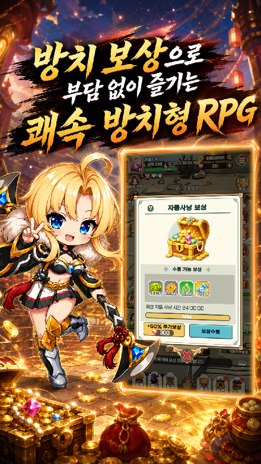
자동사냥 보상함 UI예요. 최대 자동 사냥 시간이 24:00:00으로 표시돼 있어요.
이미지 출처: 귀혼키우기 공식 사전예약 페이지 갤러리 · 네이버 본문엔 받아서 재업로드 권장
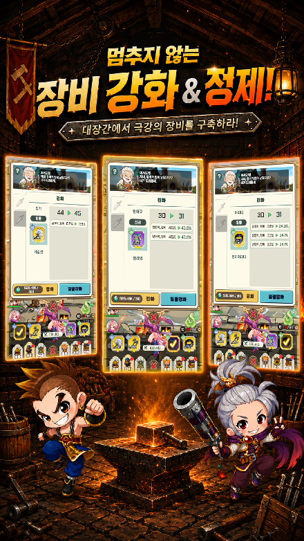
대장간에서 장비를 강화·정제하는 화면이에요.
이미지 출처: 귀혼키우기 공식 사전예약 페이지 갤러리 · 네이버 본문엔 받아서 재업로드 권장
직업은 몇 가지나 있을까요
직업은 총 6종류로 나뉘는데, 근접부터 원거리까지 골고루 있어서 취향껏 고르면 될 것 같아요. 여러분은 어떤 무기를 든 캐릭터가 제일 끌리세요? 공식 사전예약 페이지 '직업소개' 탭에 나온 설명을 그대로 옮겨볼게요.
- 검무사 — 날렵한 검술과 움직임으로 적의 빈틈을 파고들고, 빠르고 치명적인 연계로 전장을 지배해요.
- 도무사 — 강인한 체력과 도법으로 전장을 밀어붙이고, 위기에도 흔들리지 않는 불굴의 정신을 지녔어요.
- 조자객 — 빈틈을 노려 단숨에 적을 베어내고, 빠른 움직임과 연계 공격으로 전장을 휘저어요.
- 암기자객 — 날카로운 암기로 멀리서 적을 제압하고, 쉴 틈 없는 투척 공격으로 압도해요.
- 장도사 — 강력한 선술로 넓은 범위를 동시에 공격하고, 이어지는 광역 도술로 전장을 지배해요.
- 선도사 — 부채에 깃든 기운으로 전장을 휘어잡고, 화려한 술법과 연속 공격으로 압도해요.
이 중에서 근접 검사인 검무사, 은신 암살에 가까운 조자객, 부채를 쓰는 원거리 술사 선도사 이렇게 세 종류만 캐릭터 아트를 가져와봤는데, 그림체가 확실히 밝고 캐주얼한 편이었습니다.
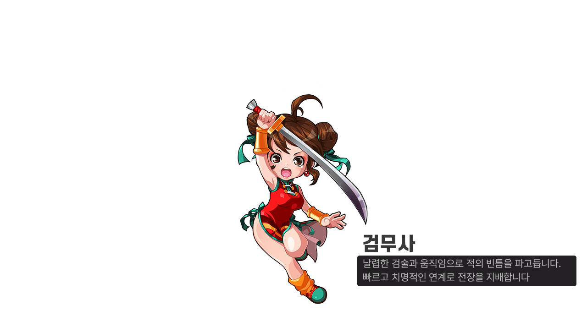
검무사예요. 빠르고 치명적인 연계로 전장을 지배한다고 소개돼 있어요.
이미지 출처: 귀혼키우기 공식 사전예약 페이지 직업소개 · 네이버 본문엔 받아서 재업로드 권장
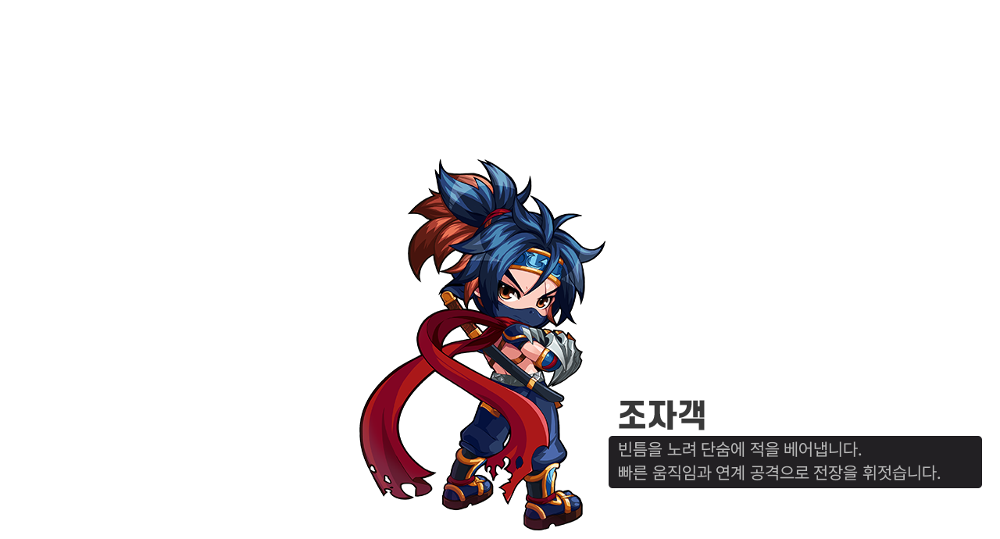
조자객이에요. 빈틈을 노려 단숨에 적을 베어낸다고 해요.
이미지 출처: 귀혼키우기 공식 사전예약 페이지 직업소개 · 네이버 본문엔 받아서 재업로드 권장
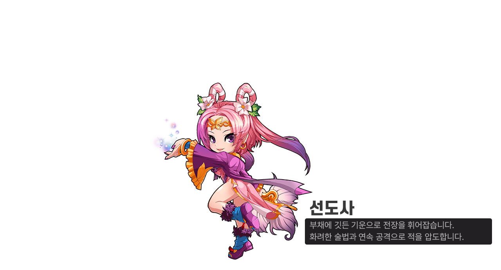
선도사예요. 부채에 깃든 기운으로 화려한 술법을 펼치는 원거리 직업이에요.
이미지 출처: 귀혼키우기 공식 사전예약 페이지 직업소개 · 네이버 본문엔 받아서 재업로드 권장
사전예약은 언제부터 언제까지 하는 걸까요
사전예약은 2026년 8월 11일에 시작됐고, 마감일이 따로 정해져 있지는 않고 정식 출시 전까지 계속 진행됩니다. 디스이즈게임 기사를 보니 사전예약을 시작한 지 9일 만에(8월 중순 기준) 신청자가 50만 명을 넘어섰다고 하더라고요, 관심이 꽤 뜨거웠나 봐요.
참여 방법은 어렵지 않은데요, 코드를 따로 입력하는 방식이 아니라 공식 사전예약 페이지에서 원하는 스토어(구글플레이·앱스토어·원스토어)를 고르고 휴대폰 번호 인증을 마치면 신청이 끝나요. 아래 링크로 바로 들어가서 신청하실 수 있어요.
👉 귀혼키우기 스토어 사전예약 바로가기
👉 귀혼키우기 공식 사전예약 페이지
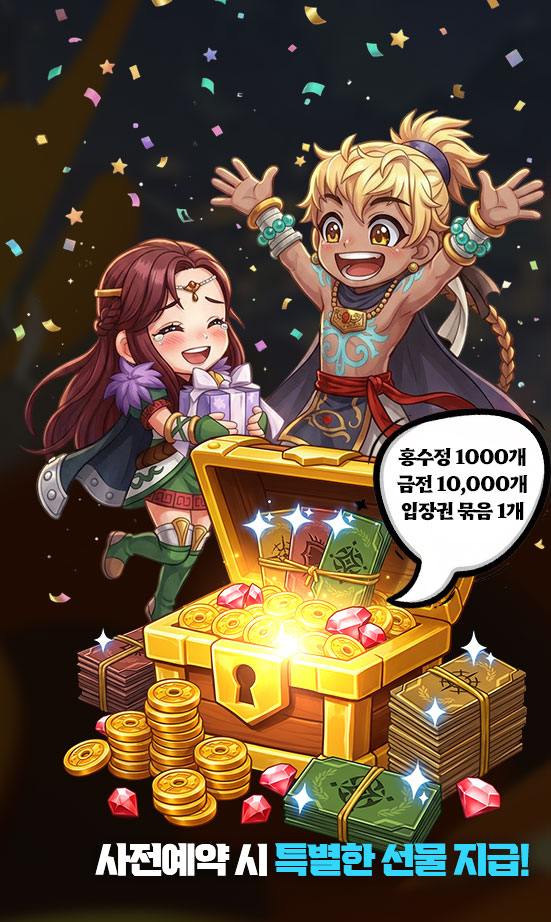
사전예약 신청만 해도 홍수정 1,000개·금전 10,000개·입장권 묶음 1개를 기본으로 준다는 배너예요.
이미지 출처: 귀혼키우기 공식 사전예약 페이지 · 네이버 본문엔 받아서 재업로드 권장
사전예약하면 뭘 받을 수 있을까요
사전예약 보상은 크게 네 갈래로 나뉘어 있어요.
- 기본 선물 — 스토어를 고르기 전, 사전예약 신청 자체만으로 홍수정 1,000개, 금전 10,000개, 입장권 묶음 1개를 기본으로 받아요.
- 마켓 사전예약 패키지 — 스토어를 선택하면 홍수정 1,000개, 봉인핵 500개, 동료 소환권 40개를 추가로 받을 수 있어요.
- 커뮤니티(공식 라운지) 가입 선물 — 공식 라운지에 가입하면 장비 강화석 400개를 또 챙길 수 있어요.
- 목표 달성 이벤트 — 사전예약 신청자 수가 누적으로 늘어날 때마다 전원에게 보상을 주는 방식인데, 30만 명 달성 시 홍수정 3,000개, 50만 명 달성 시 봉인핵 2,000개, 80만 명 달성 시 금전 50,000개를 준다고 해요.
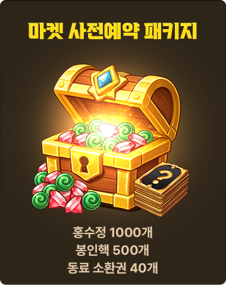
마켓 사전예약 패키지 — 홍수정 1,000개·봉인핵 500개·동료 소환권 40개예요.
이미지 출처: 귀혼키우기 공식 사전예약 페이지 스토어탭 · 네이버 본문엔 받아서 재업로드 권장
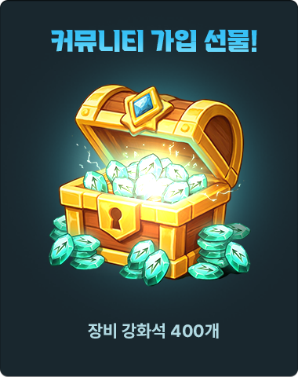
커뮤니티(공식 라운지) 가입 선물 — 장비 강화석 400개예요.
이미지 출처: 귀혼키우기 공식 사전예약 페이지 · 네이버 본문엔 받아서 재업로드 권장
재밌는 건 목표 달성 이벤트 중에서도 100만 명·200만 명 단계는 아직 물음표 아이콘이 그려진 비밀상자로만 표시돼 있다는 거예요. 공개는 안 됐지만 없는 게 아니라 나중에 열어볼 상자가 준비돼 있다는 뜻이겠죠. 참고로 코드형 쿠폰은 따로 없고, 위 보상들은 계정당 최초 1회, 게임 접속 후 우편함에서 받을 수 있어요. 수령 기한은 2026년 12월 31일까지고 일부 내용은 바뀔 수 있다고 하니 참고해두시면 좋을 것 같습니다.
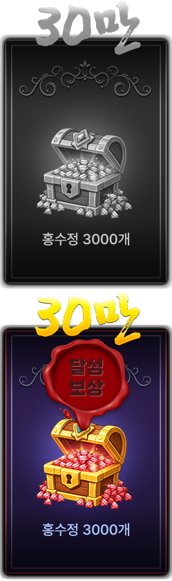
30만 명 달성 보상 — 홍수정 3,000개예요.
이미지 출처: 귀혼키우기 공식 사전예약 페이지 목표달성탭 · 네이버 본문엔 받아서 재업로드 권장
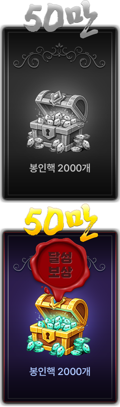
50만 명 달성 보상 — 봉인핵 2,000개예요.
이미지 출처: 귀혼키우기 공식 사전예약 페이지 목표달성탭 · 네이버 본문엔 받아서 재업로드 권장
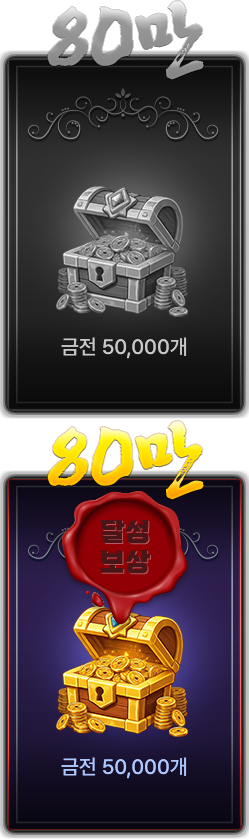
80만 명 달성 보상 — 금전 50,000개예요.
이미지 출처: 귀혼키우기 공식 사전예약 페이지 목표달성탭 · 네이버 본문엔 받아서 재업로드 권장
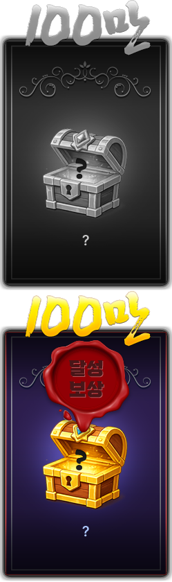
100만 명 달성 보상은 아직 물음표 아이콘이 그려진 비밀상자로만 공개돼 있어요.
이미지 출처: 귀혼키우기 공식 사전예약 페이지 목표달성탭 · 네이버 본문엔 받아서 재업로드 권장
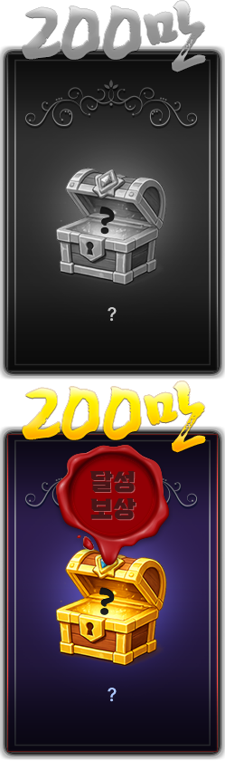
200만 명 달성 보상도 마찬가지로 아직 물음표 아이콘이 그려진 비밀상자로만 공개돼 있어요.
이미지 출처: 귀혼키우기 공식 사전예약 페이지 목표달성탭 · 네이버 본문엔 받아서 재업로드 권장
귀혼 코스프레 챌린지는 어떻게 참여하나요
귀혼 코스프레 챌린지는 '귀혼' 캐릭터나 마물을 코스프레한 사진·영상을 찍어서 SNS에 올리고 구글폼으로 제출하면 참여가 끝나는 이벤트예요. 다만 사전예약을 완료한 분만 참여할 수 있고요, 접수 기간은 2026년 8월 27일부터 9월 27일 23시 59분까지고, 당첨자는 9월 30일에 발표된다고 해요.
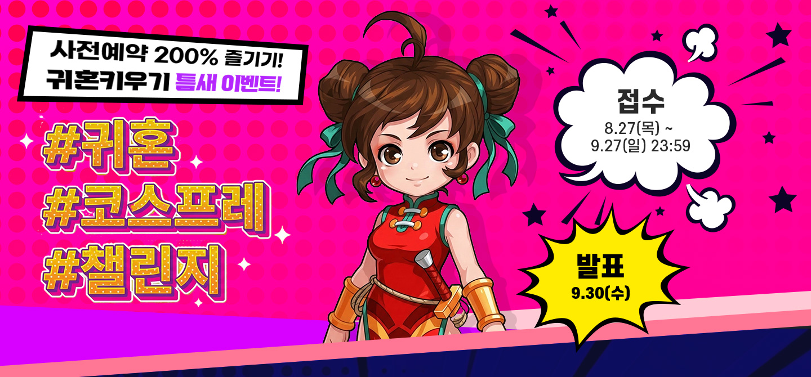
귀혼 코스프레 챌린지 공식 배너예요. 접수 8/27~9/27, 발표 9/30이라고 적혀 있어요.
이미지 출처: 귀혼 코스프레 챌린지 공식 페이지 · 네이버 본문엔 받아서 재업로드 권장
참여 방법을 조금 더 자세히 보면, 필수 해시태그(#귀혼키우기 #귀혼코스프레챌린지 #엠게임)를 붙여서 본인 SNS에 전체공개로 올린 다음, 게시물 URL이랑 인증 스크린샷, 대표 이미지를 구글폼으로 제출하면 되는데요. 심사는 오직 SNS 좋아요 수로만 실시간 집계된다고 해요. 상품도 꽤 빵빵한 편인데, 정리해보면 이래요.
- 대상(1명) — 갤럭시 Z 폴드8
- 금상(1명) — 맥북 네오
- 우수상(3명) — 에어팟 프로3
- 참가상(응모자 전원) — 커피 쿠폰 1만원권
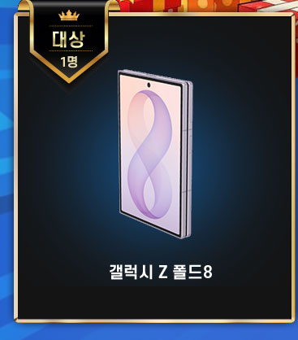
대상(1명) 경품 — 갤럭시 Z 폴드8이에요.
이미지 출처: 귀혼 코스프레 챌린지 공식 페이지 · 네이버 본문엔 받아서 재업로드 권장
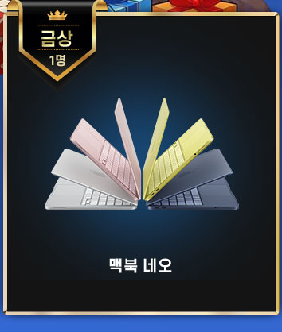
금상(1명) 경품 — 맥북 네오예요.
이미지 출처: 귀혼 코스프레 챌린지 공식 페이지 · 네이버 본문엔 받아서 재업로드 권장
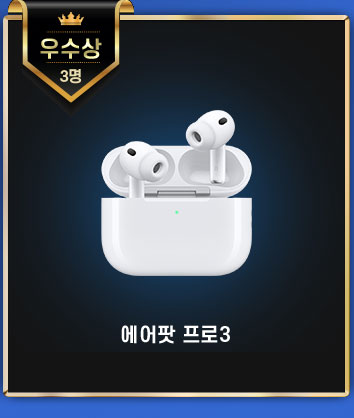
우수상(3명) 경품 — 에어팟 프로3예요.
이미지 출처: 귀혼 코스프레 챌린지 공식 페이지 · 네이버 본문엔 받아서 재업로드 권장
참가상 — 응모자 전원에게 커피 쿠폰 1만원권을 준다고 해요.
이미지 출처: 귀혼 코스프레 챌린지 공식 페이지 · 네이버 본문엔 받아서 재업로드 권장
이재창 엠게임 귀혼키우기 총괄이 밝히길, 사전예약에 몰린 관심에 보답하는 차원에서 출시 전부터 유저들과 함께 즐길 수 있는 자리를 이렇게 마련하게 됐다고 해요.
자주 묻는 질문
Q. 코스프레 준비가 부담스러운데 참여할 수 있을까요?
완성도 높은 전문 코스프레가 아니어도 괜찮아요. 집에서 간단한 소품으로 준비하는 이른바 '방구석 코스프레'도 폭넓게 인정한다고 공식적으로 밝혔거든요.
Q. 좋아요 수가 같으면 어떻게 되나요?
좋아요 수가 동일하면 게시물을 먼저 올린 참가자가 우선순위를 가진다고 안내돼 있어요.
공식 사전예약 영상도 하나 올라와 있는데, 궁금하신 분들은 참고하시면 좋을 것 같아요.
👉 귀혼키우기 공식 사전예약 영상 보러가기
귀혼키우기는 이번에 처음 다뤄보는 게임이라 아직 봄딩 블로그에 관련 글은 없어요. 정식 출시되면 후기로 다시 찾아올게요!
참고한 곳
· 귀혼키우기 공식 사전예약 페이지
· 귀혼 코스프레 챌린지 공식 페이지
· 귀혼키우기 구글플레이 스토어
무협 방치형 RPG 좋아하시는 분들이라면 사전예약 미리 걸어두고 목표 달성 보상까지 같이 챙겨보시면 좋을 것 같아요!